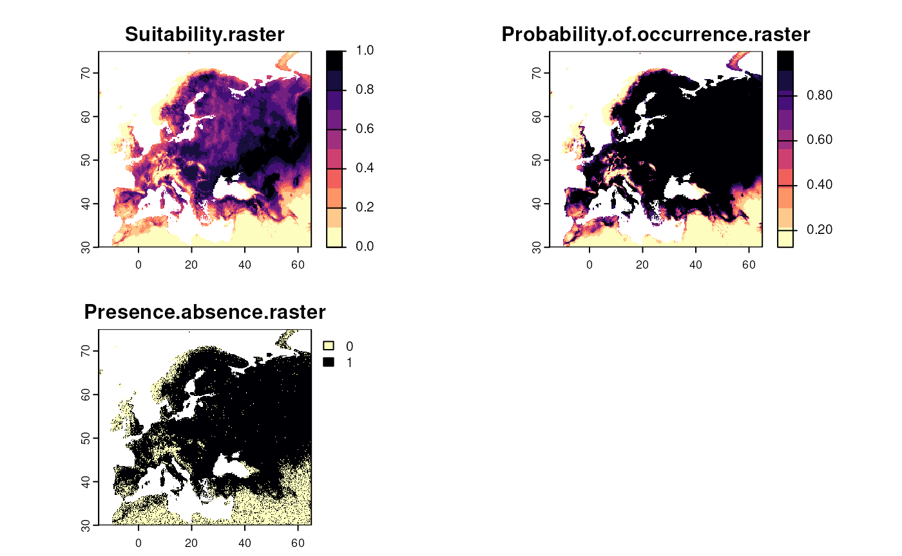
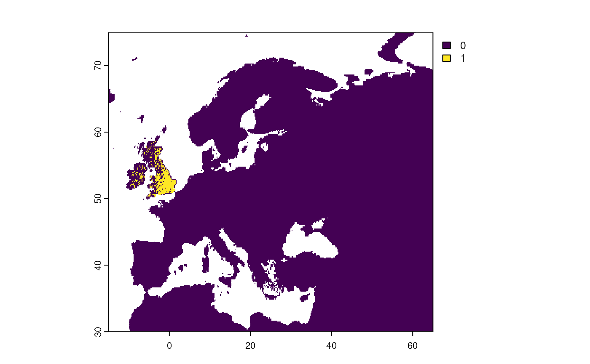
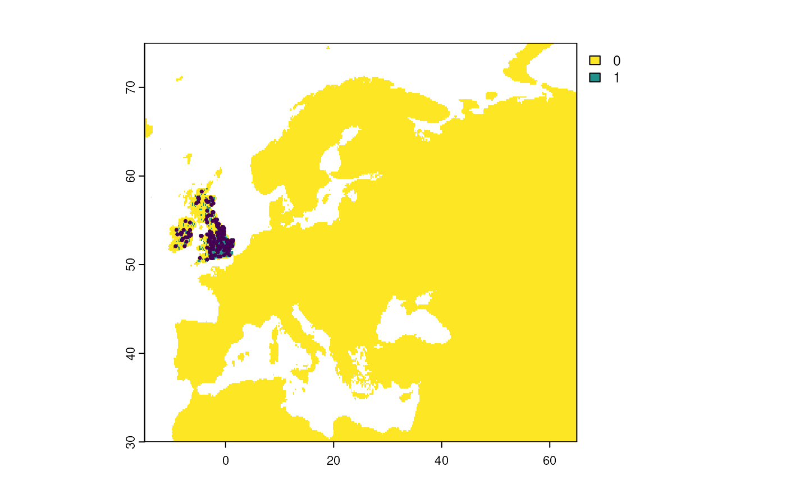
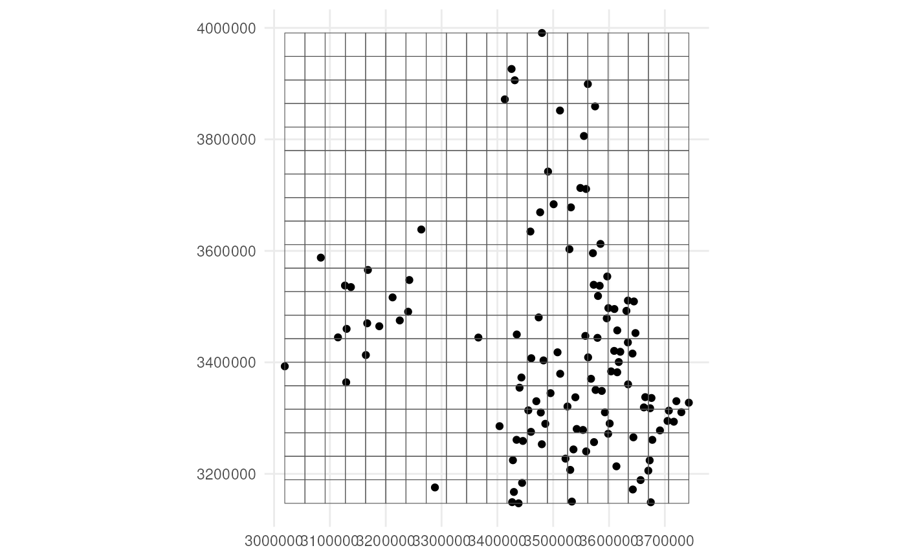
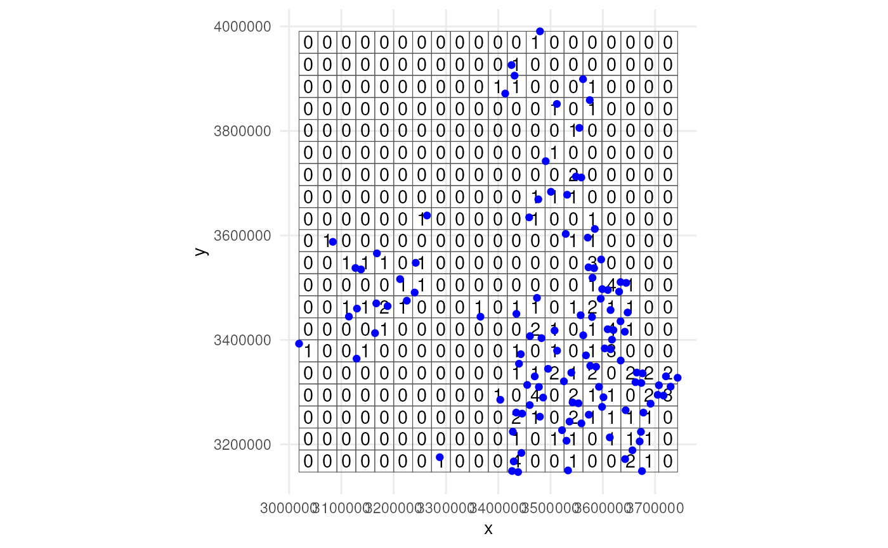

Create occurrence cubes for virtual species
Source:vignettes/articles/cube-for-virtual-species.Rmd
cube-for-virtual-species.RmdApart from simulating occurrence cubes from scratch, gcube can also be used to create cubes for virtual species generated using bioclimatic variables. This tutorial demonstrates how to generate a virtual species, apply a geographical limit, sample occurrences, and convert them into an occurrence cube.
Create virtual species
Virtual species can be created using the virtualspecies R package (Leroy et al., 2015). Below is a basic example of how to create a virtual species. For additional options and a more comprehensive guide, refer to the package documentation and the tutorial available here.
# Load packages
library(gcube)
library(geodata) # get bioclimatic data
library(virtualspecies) # generate virtual species
library(sf) # work with spatial objects
library(terra) # work with raster data
library(ggplot2) # data visualisationStep 1: Download WorldClim Data
We first obtain WorldClim bioclimatic data at a 10-minute resolution.
# Download bioclimatic data
worldclim <- worldclim_global(var = "bio", res = 10, path = tempdir())Step 2: Define the region of interest
We define the extent for the Western Palearctic and crop the climate data.
Step 3: Select relevant bioclimatic variables
We select a subset of bioclimatic variables: bio2, bio5, bio6, bio13, bio14, and bio15.
# Specify variables
bio_vars <- c("bio2", "bio5", "bio6", "bio13", "bio14", "bio15")
# Select variables
bio_string <- paste0("bio_", sub("bio", "", bio_vars), collapse = "|")
bio_vars_selected <- names(worldclim)[grepl(bio_string, names(worldclim))]
# Subset climate data
worldclim_vars <- worldclim[[bio_vars_selected]]Step 4: Generate a virtual species
We create a random virtual species based on the selected bioclimatic variables.
set.seed(123)
# Generate random virtual species
virtual_species <- generateRandomSp(worldclim_vars)
#> Reading raster values. If it fails for very large rasters, use arguments 'sample.points = TRUE' and define a number of points to sample with 'nb.point'.
#> - Perfoming the pca
#> - Defining the response of the species along PCA axes
#> - Calculating suitability values
#> The final environmental suitability was rescaled between 0 and 1.
#> To disable, set argument rescale = FALSE
#> - Converting into Presence - Absence
#> --- Generating a random value of beta for the logistic conversion
#> --- Determing species.prevalence automatically according to alpha and beta
#> Logistic conversion finished:
#>
#> - beta = 0.194194194194194
#> - alpha = -0.1
#> - species prevalence =0.770632849948426
Step 5: Apply a geographical limit
We limit the species distribution to the United Kingdom and Ireland.
# Limit distribution
virtual_distribution <- limitDistribution(
x = virtual_species,
geographical.limit = "country",
area = c("United Kingdom", "Ireland")
)
#> Warning: [rasterize] unexpected additional argument(s): silent
Step 6: Sample occurrences
We sample 150 occurrences from the restricted distribution with a
detection probability of 0.8 using the
virtualspecies::sampleOccurrences() function. Detection
probability and sampling bias can be introduced similar to
sample_observations().
?virtualspecies::sampleOccurrences
# Sample from virtual species distribution
virtual_sample <- sampleOccurrences(
virtual_distribution,
n = 150,
detection.probability = 0.8
)
Grid designation with gcube
Now we can create an occurrence cube for this virtual species The
most important step, is to make the virtualspecies
output compatible with gcube input. This is done using
the virtualsample_to_sf() function.
For grid designation, see also the tutorial 3. Specifying the grid designation process.
Step 1: Convert sampled points to sf format
We transform the sampled points from a
virtualspecies object so that it can be used by
gcube with the virtualsample_to_sf()
function.
?virtualsample_to_sf
# Transform virtual samples to sf object
detections_df_raw <- virtualsample_to_sf(virtual_sample)
detections_df_raw
#> Simple feature collection with 150 features and 2 fields
#> Geometry type: POINT
#> Dimension: XY
#> Bounding box: xmin: -9.25 ymin: 50.58333 xmax: 1.416667 ymax: 58.25
#> Geodetic CRS: WGS 84
#> First 10 features:
#> id observed geometry
#> 1 62966 TRUE POINT (-0.75 53.08333)
#> 2 60516 TRUE POINT (-9.083333 53.91667)
#> 3 63937 TRUE POINT (1.083333 52.75)
#> 4 59607 TRUE POINT (-0.5833333 54.25)
#> 5 66802 TRUE POINT (-1.416667 51.75)
#> 6 65795 TRUE POINT (-9.25 52.08333)
#> 7 60087 TRUE POINT (-0.5833333 54.08333)
#> 8 55755 TRUE POINT (-2.583333 55.58333)
#> 9 54310 TRUE POINT (-3.416667 56.08333)
#> 10 56230 TRUE POINT (-3.416667 55.41667)Optional: Extract values from a raster
You can also extract raster values when transforming the sample data. For instance, extracting suitability or occurrence probability can be helpful for downstream analysis.
# Rename raster layers for clear output
names(virtual_species$suitab.raster) <- "suitability"
names(virtual_species$probability.of.occurrence) <- "occ_prob"
# Transform virtual samples and extract values
virtualsample_to_sf(
virtual_sample,
raster_lyr = c(virtual_species$suitab.raster,
virtual_species$probability.of.occurrence)
)
#> Simple feature collection with 150 features and 4 fields
#> Geometry type: POINT
#> Dimension: XY
#> Bounding box: xmin: -9.25 ymin: 50.58333 xmax: 1.416667 ymax: 58.25
#> Geodetic CRS: WGS 84
#> First 10 features:
#> id observed suitability occ_prob geometry
#> 1 62966 TRUE 0.608657235 0.9843980 POINT (-0.75 53.08333)
#> 2 60516 TRUE 0.081922322 0.2455073 POINT (-9.083333 53.91667)
#> 3 63937 TRUE 0.481108846 0.9463000 POINT (1.083333 52.75)
#> 4 59607 TRUE 0.375077019 0.8592202 POINT (-0.5833333 54.25)
#> 5 66802 TRUE 0.516553006 0.9617124 POINT (-1.416667 51.75)
#> 6 65795 TRUE 0.019556962 0.1485053 POINT (-9.25 52.08333)
#> 7 60087 TRUE 0.354688757 0.8327085 POINT (-0.5833333 54.08333)
#> 8 55755 TRUE 0.294534380 0.7317269 POINT (-2.583333 55.58333)
#> 9 54310 TRUE 0.248244943 0.6319305 POINT (-3.416667 56.08333)
#> 10 56230 TRUE 0.004863729 0.1308681 POINT (-3.416667 55.41667)We transform the detected points into an sf object to the LAEA Europe CRS (EPSG:3035).
# Transform CRS
detections_df_transformed <- st_transform(detections_df_raw, crs = 3035)Step 2: Add coordinate uncertainty
See also the tutorial 2. Simulating the detection process.
We only keep the detected occurrences using the
filter_observations() function.
detections_df <- filter_observations(detections_df_transformed)Optionally, we can add coordinate uncertainty using the
add_coordinate_uncertainty() function. We add 25 m
uncertainty for each observation.
# Add coordinate uncertainty
observations_df <- add_coordinate_uncertainty(
observations = detections_df,
coords_uncertainty_meters = 25
)Step 3: Specify reference grid
We also need a grid. Each observation will be designated to a grid cell. You can provide your own grid (e.g. EEA reference grid for Europe). For this example we create a simple grid around the sampled points.
# Create reference grid
buffered_observations <- st_buffer(observations_df, 25)
cube_grid <- st_make_grid(
buffered_observations,
n = c(20, 20),
square = TRUE
) %>%
st_sf()The grid looks like this.
ggplot() +
geom_sf(data = observations_df) +
geom_sf(data = cube_grid, alpha = 0) +
coord_sf(datum = 3035) +
theme_minimal()
Step 4: Perform grid designation
We perform grid designation both in aggregated version and not for visualisation purposes.
# Perform grid designation
occurrence_cube_df <- grid_designation(
observations_df,
cube_grid,
seed = 123
)
#> Warning in sample_from_uniform_circle(observations = observations, missing_uncertainty = missing_uncertainty, : No column `time_point` present!
#> Assuming only a single time point.
# Get sampled points from uncertainty circle
sampled_points <- grid_designation(
observations_df,
cube_grid,
seed = 123,
aggregate = FALSE
)
#> Warning in sample_from_uniform_circle(observations = observations, missing_uncertainty = missing_uncertainty, : No column `time_point` present!
#> Assuming only a single time point.Lets visualise were the samples were taken. Note that no distinction
is made between zeroes and NA values. Every absence gets a
zero value.
ggplot() +
geom_sf(data = occurrence_cube_df,
alpha = 0) +
geom_sf_text(data = occurrence_cube_df,
aes(label = n)) +
geom_sf(data = sampled_points,
colour = "blue") +
coord_sf(datum = 3035) +
theme_minimal()